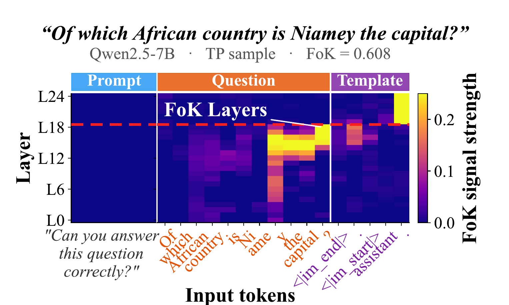
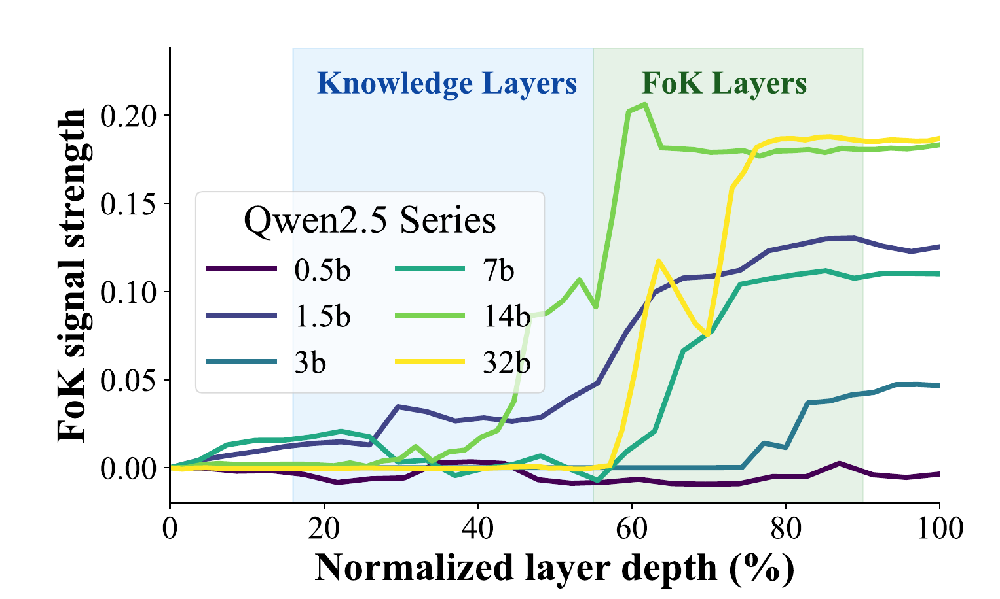
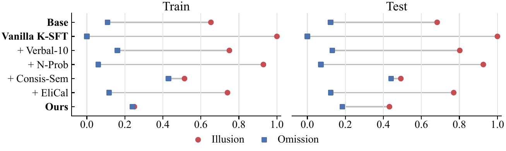
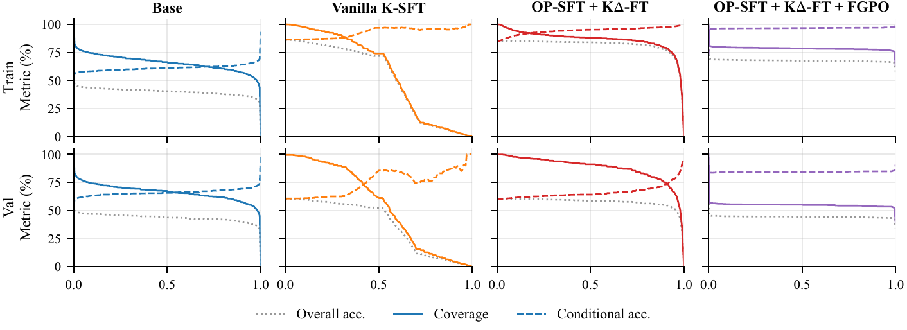

NeurIPS 2026
1City University of Hong Kong 2Tencent Jarvis Lab 3Xi'an Jiaotong University
4Renmin University of China 5University of Science and Technology of China 6Westlake University


Figure 1. The FoK signal localizes late under causal restoration. Panel (a) shows a 7B example across tokens and layers; panel (b) aggregates FoK recovery across Qwen2.5 sizes over normalized depth.
Post-training updates change what large language models (LLMs) can answer, but may leave their answerability judgments misaligned. We study this knowledge–judgment desynchronization through functional feeling of knowing (FoK), which supports selective generation, retrieval triggering, and model routing without implying subjective experience. We propose two trainable channels: a knowledge channel that changes answerability and a FoK channel that judges the current knowledge state. Three stages train them: on-policy supervised fine-tuning (OP-SFT) updates knowledge from corrected on-policy answers; knowledge-delta FoK training (KΔ-FT) adapts judgments across intermediate knowledge states; and FoK-guided policy optimization (FGPO) trains the subsequent answer or explanation. Factual-QA experiments, cross-dataset evaluation, and three sequential updates show that explicit FoK alignment improves judgment quality on updated knowledge. MMLU and ARC-Easy separately assess capability preservation.
Starting from a base LLM M, we represent post-training changes as parameter deltas. The knowledge delta κ forms the knowledge-retrieval channel, which changes what the model knows. The FoK delta φ forms the FoK channel, which judges whether the current knowledge state supports a correct answer. The FoK score is read from the model's yes/no judgment:
J = P(yes) / (P(yes) + P(no))
FGPO generates a short context trace, makes a FoK judgment, and produces an answer or explanation in one pass:
<think>...reasoning...</think> <answer>yes|no</answer>
<response>answer or explanation</response>We update Qwen2.5-7B-Instruct with TriviaQA questions and evaluate on the update set (Train), held-out TriviaQA questions (Test), and MMLU and ARC-Easy (General). Bias is the signed mean of illusion and omission errors; closer to 0 is better.
| Method | Train Acc. ↑ | Train AUROC ↑ | Test Acc. ↑ | Test AUROC ↑ | Test Bias →0 | MMLU ↑ | ARC ↑ |
|---|---|---|---|---|---|---|---|
| Base | 0.680 | 0.702 | 0.672 | 0.688 | 0.402 | 0.687 | 0.811 |
| Base + EliCal | 0.637 | 0.808 | 0.622 | 0.810 | 0.254 | 0.709 | 0.504 |
| Vanilla K-SFT | 0.874 | 0.458 | 0.546 | 0.519 | 0.500 | 0.713 | 0.840 |
| Vanilla K-SFT + Prob | 0.874 | 0.590 | 0.546 | 0.541 | 0.498 | 0.713 | 0.840 |
| Vanilla K-SFT + SemEnt | 0.874 | 0.538 | 0.546 | 0.526 | 0.504 | 0.713 | 0.840 |
| Ours | 0.961 | 0.817 | 0.692 | 0.809 | 0.308 | 0.711 | 0.830 |
| Stage | Acc. ↑ | AUROC ↑ | Illu. ↓ | Om. ↓ | Bias →0 |
|---|---|---|---|---|---|
| Base | 0.672 | 0.688 | 0.683 | 0.122 | 0.402 |
| Stage 1: + OP-SFT | 0.679 | 0.603 | 0.601 | 0.283 | 0.442 |
| Stage 2: + KΔ-FT | 0.699 | 0.770 | 0.478 | 0.187 | 0.333 |
| Stage 3: + FGPO | 0.692 | 0.809 | 0.432 | 0.184 | 0.308 |


For Base and Vanilla K-SFT the curves are nearly flat: lowering coverage does not raise accuracy, so their FoK scores do not rank answerability. OP-SFT + KΔ-FT restores a monotonic trade-off. FGPO flattens the curves for a different reason: its scores collapse to 0 or 1, so the policy has already committed to answer or abstain, and it answers more selectively, with higher accuracy on the answered subset at the cost of lower coverage.
@inproceedings{fu2026feeling,
title = {Feeling of Knowing in Large Language Models},
author = {Fu, Zichuan and Wu, Xian and Gao, Jingtong and Zhang, Wenlin and Li, Jiaxuan and Wang, Binhao and Deng, Yimin and Li, Guojing and Li, Xiaopeng and Xu, Derong and Zheng, Yefeng and Zhao, Xiangyu},
booktitle = {Advances in Neural Information Processing Systems (NeurIPS)},
year = {2026}
}